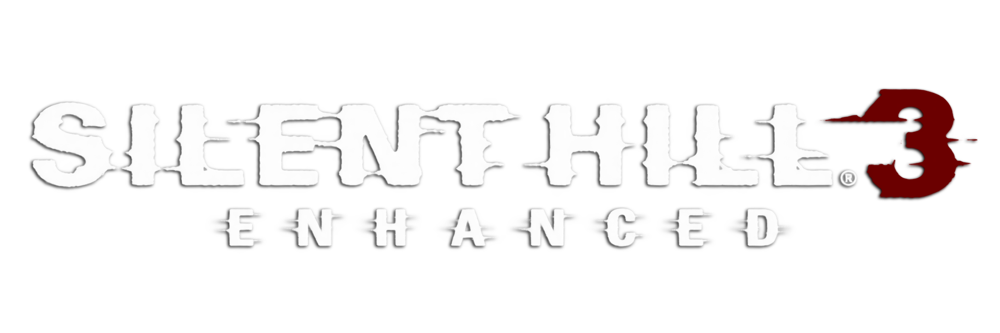
SH3 Enhanced is a project that makes the PC version of Silent Hill 3 run properly on modern systems, with widescreen, 60 FPS, controller support, and fixes for long-standing bugs.

SH3 Enhanced is a project that makes the PC version of Silent Hill 3 run properly on modern systems, with widescreen, 60 FPS, controller support, and fixes for long-standing bugs.
These fourteen magazine shirts were exclusive to the PS2 release. SH3 Enhanced restores them to PC. Enter a password in the main-menu Extra Costume option; after starting Extra New Game, equip the shirt from Items. Passwords are case-sensitive.
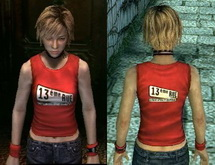
Suspense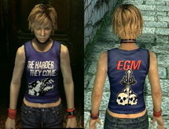
EGMpretaporter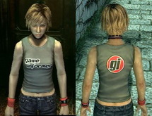
gameinformer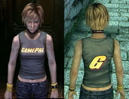
ProTip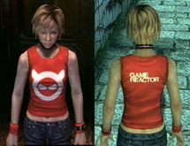
SH3_Wrestlarn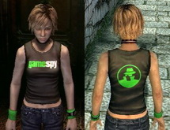
iaml33t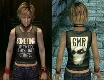
GMRownzjoo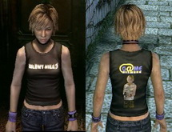
IwannabeaGJ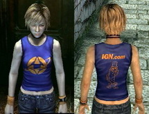
IGN_pickleboy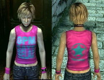
SH3_OPiuM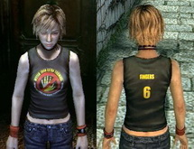
extra_thumbs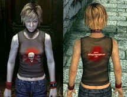
sLmLdGhSmKfBfH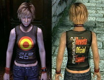
MATADOR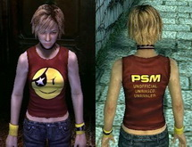
badicalCostume passwords and preview images from Silent Hill Memories. Images are credited to ZOG.
Download the latest release ZIP and extract it into your Silent Hill 3 game folder, beside sh3.exe.
You need the original PC game installed first. SH3 Enhanced is a patch; it does not include the game or its files.
Extract the files into the folder containing sh3.exe. Merge folders if Windows asks.
Open the Configuration Tool to change settings, then launch the game.
372AE792.SH3 Enhanced includes or references code, software, assets, and research from these projects:
third_party/xidi/.